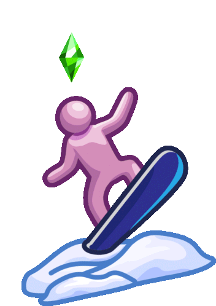

Navegación


¡Bienvenido al blog!Los Sims 4 es un videojuego de simulación social y de vida, el cuarto de la serie de juegos de Los Sims, desarrollado por Maxis y publicado por Electronic Arts. |
Videos cortesía de los canales de Youtube LosSimsEA España y Sims Comunity. Fue lanzado por primera vez el 2 de septiembre del 2014 en Windows, pero luego fue adaptado a MAC OS X, PlayStation 4 y Xbox One. |
|---|
Cada partida se compone de tres modos de juego que puedes acceder cuando quieras: Modo Crear, Modo Construir y modo Vivir
Modo Crear
En este modo creas a tus Sims configurandoles el aspecto, la personalidad, la ropa, la genética, etc.
Ver más
Modo Construir
En este modo puedes construir, diseñar y decorar los edificios que usarán durante el juego, normalmente una casa.
Ver más
Modo Vivir
En este modo debes cuidar a tus Sims (o no) y decidir que ocurrirá en sus vidas, el trabajo que tendrán, buscarles pareja, etc.
Ver más
La saga de Los Sims celebró este año su 22 aniversario, anunciando el próximo juego que van a lanzar (Los Sims 5) y que los Sims 4 ahora sería Free to Play. Es por ello que el juego, como lleva vigente desde el 2014, ha cambiado mucho a lo largo de los años.
|
Este video nos documenta de forma breve los avances que ha tenido el juego en sus diferentes actualizaciones (cortesía del canal de Youtube Catchy Virus). |
Asimismo, en este corto video se puede ver la gran mejora de calidad y motor de toda la saga en general (cortesía del canal de Youtube The Red Plumbob). |
|---|